Unveiling I/O Riot NG — Part 1: a guided tour
Published at 2026-05-07T09:46:29+03:00
I rewrote I/O Riot. The old version, written in C and SystemTap, dates back to 2017. The new version (called ior) uses Go, C, and BPF via libbpfgo. It runs on Linux and is primarily a TUI dashboard rather than a record/replay box. It took around two years of intermittent work to reach this 1.0.0 release.
This is the first of three posts. Part 1 is the demo-driven tour: what ior looks like, how the dashboard tabs work, how the live flamegraph reads, how filtering and recording work. Part 2 covers installing it on a fresh Rocky Linux 9 box and the "compile once, run everywhere" story underneath that: eBPF, CO-RE, libbpfgo, static linking, and why a 23 MB binary you build on one machine just runs on every other Linux host you scp it to. Part 3 is the under-the-hood companion: the per-event schema, the syscall-coverage probe generator, async-syscall caveats, and post-mortem SQL on the parquet output.

2026-05-08 Unveiling I/O Riot NG v1.0.0 — Part 1: a guided tour (You are currently reading this)
2026-05-11 Unveiling I/O Riot NG — Part 2: install and compile once, run everywhere
2026-05-17 Unveiling I/O Riot NG — Part 3: under the hood
I/O Riot NG on Codeberg
the original I/O Riot post (2018)
Table of Contents
What it does
ior attaches BPF tracepoints to a chunk of the synchronous-I/O syscall surface (open, read, write, stat, mmap, sync, link, fcntl, dup, the obvious ones), plus the async ones (io_uring_*, aio_*). Each enter/exit pair becomes an event with a duration plus an inter-syscall gap, and the events feed a Go Bubble Tea dashboard with seven tabs: a live flamegraph, an overview, sortable per-syscall / per-file / per-process tables, latency histograms, and a live event stream with a stackable filter UI on top.
Same shape as the old I/O Riot in spirit: capture what the system is actually doing, not synthetic load. Different shape in execution: no replay engine, no separate record file unless you ask for one, no kernel-debug-info dance.

First launch
sudo ./ior
You land on the PID picker. The default selection is "All PIDs", so Enter just dumps you straight at the dashboard.
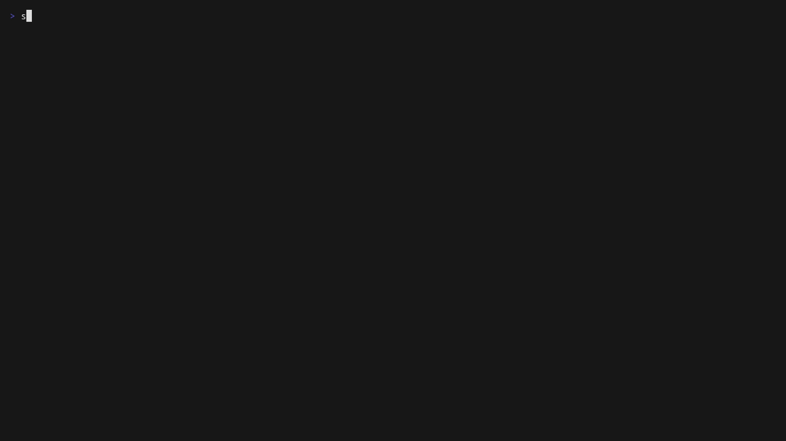
The dashboard opens on the live flamegraph. Bars grow as new events arrive. Before walking through the keys, a paragraph on what you're looking at, since flamegraphs are easier to read than they are to describe:
A flamegraph is a histogram of stacks. Each horizontal bar is one entry in a stack; every bar directly above it is a child of that entry, and the stack you read top-to-bottom is the same shape as a call chain. In ior, "stack" doesn't mean function-call stack (we don't have userspace symbols [yet]). It means a tuple of dimensions of the trace: by default comm/path/tracepoint, so the bottom row is per-process names, the middle row is per-file paths, and the top row is the syscall (enter_read, enter_openat, etc.). A wide bar means lots of events landed in that bucket, a narrow bar means few. There's no time axis. Left-to-right is just sort order, not chronology. The whole chart is one "where is the I/O coming from?" picture.
The unusual bit: this flamegraph is live. Most of the flamegraph tooling out there (Brendan Gregg's flamegraph.pl, all the perf script | stackcollapse-* | flamegraph.pl pipelines, every pprof -web invocation) produces a static SVG: capture a profile for N seconds, render once, browse the result. ior's tab is not that. Bars grow, shrink, appear, and disappear in real time as events stream in from the kernel, at full screen-refresh rate while the workload runs, with no pause. You can sit on this tab while you change something on the system (start a build, cycle a service, run a query) and watch the I/O shape mutate underneath you. That's a different mental model from the static "I have a profile, let me look at it" workflow most people are used to, and it's what makes the tab actually useful as an at-a-glance diagnostic surface rather than a post-mortem artifact.
Because it's live, there's also a way to throw away the accumulated history and start the rolling count from "now": r resets the baseline. Everything the flamegraph has been counting since launch (or since the last reset) is dropped, and from that moment the chart reflects only events that arrived after the reset. Useful for the "compare before vs after" workflow — change one thing on the box, hit r immediately, and the next thirty seconds of accumulation is a fresh picture of the new state. You can also pause (and resume) the flame graph (with the space key) to get the static picture.
That visualisation buys you two things you can't easily get from a tabular view. First, hierarchy: it's obvious whether one process is doing ten thousand reads on a single file, or ten thousand reads spread across a hundred files. The first looks like one tall pillar, the second looks like a wide ridge. Second, scale: bar width is proportional to the metric (count or bytes), so a process that did 95% of the work towers over the others. The eye picks that up instantly. The same fact in a sorted table needs you to read numbers and do the ratio in your head.
Useful workflows you can do entirely from this tab:
- "What's pounding the disk?" Leave it on default order (comm/path/tracepoint) and watch which comm widens. Press b once to switch the metric to bytes if you care about throughput, not call count.
- "Why is this one process slow?" l (or →) until the cursor is on that process, then enter to zoom. The whole chart re-roots there and you see only that process's paths and syscalls.
- "What's in /var/lib/X?" Press o once to flip ordering to path/tracepoint/comm, navigate to the path, zoom. Now the children show which syscalls hit it and which processes did them.
- "Did the new deploy change the I/O shape?" Press r to reset the baseline, wait a bit, and the chart starts fresh with only events from the reset point onward. Pair the same syscall surface "before" vs "after" and the difference jumps out by shape.
Now the keys. Movement uses vi-style h/j/k/l everywhere in ior, and the cursor keys work too if you'd rather. h/l (or ←/→) walk siblings at the current depth, j/k (or ↓/↑) step shallower or deeper. enter zooms into the selected subtree (the rest of the chart greys out and the selection becomes the new root). u or ESC undoes the zoom. b toggles the metric driving bar width between event count and total bytes. / opens regex search; matching frames stay coloured while everything else greys out, so you can use it as a filter as well as a finder. o cycles between five different stack-ordering modes, each with its own lens on the data. H toggles a built-in help panel showing every key the current tab responds to, which is the easiest way to discover what's bound where without leaving the dashboard.
The five orderings ship as built-in presets. Read each preset name as bottom→top: the leftmost dimension is what you'll see lined up across the bottom of the chart (the root row), the next one up is its children, and the rightmost is the top row (the leaf). Switching the order changes which dimension you're scanning first when your eye starts at the bottom.
You change ordering with the o hotkey, on the fly, while the trace is still running. No restart, no reset, no re-recording — o just rebuilds the live chart with the next preset and keeps streaming new events into it. Press it once to flip from "processes at the bottom" to "paths at the bottom" the moment you realise you'd rather slice the data the other way; press it again to keep cycling. The toolbar updates immediately to show the new o:order(...) value. Pressing o rotates through the presets in this order:
Concrete screenshots of each preset on the same workload follow each description, so you can see how the same trace data reshapes itself depending on the lens.
comm/tracepoint/path (default) — processes at the bottom, syscalls in the middle, file paths on top. Each comm bar at the root splits into the syscalls it issued, and each syscall splits further into the files it touched. Best general-purpose view: "which programs are doing the I/O, and what kind?"
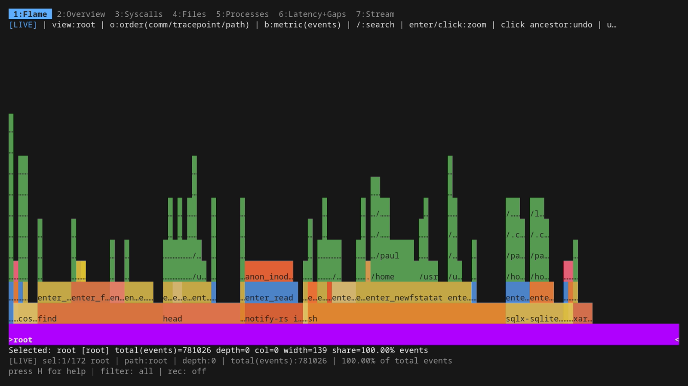
path/tracepoint/comm — file paths at the bottom, syscalls in the middle, processes on top. Use this when you suspect a particular file or directory is hot — pick the path, see which syscalls hit it, and which processes did those syscalls. Pairs naturally with directory grouping in the Files tab.
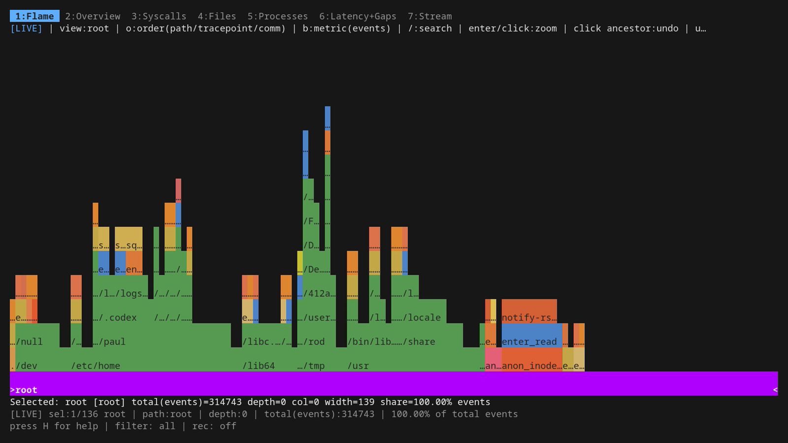
tracepoint/comm/path — syscalls at the bottom, processes in the middle, file paths on top. When you already know "this is an openat problem" or "we're write-bound", this view collects all the openat (or write) traffic into one bar at the root and lets you drill into who's doing it and to which paths.
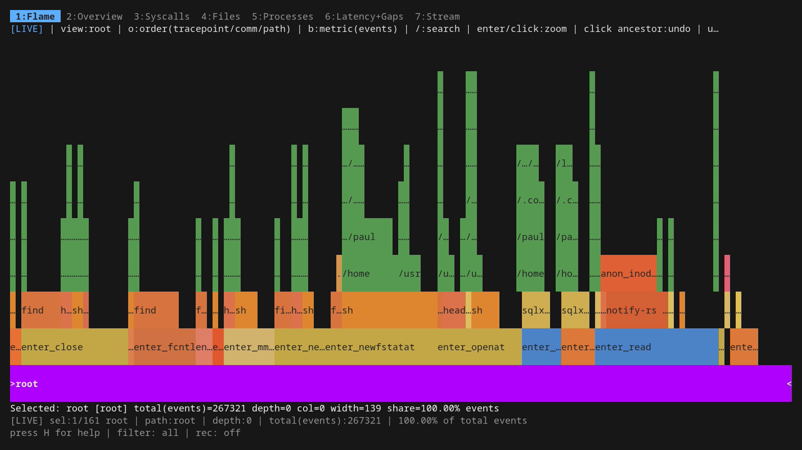
pid/tracepoint/path — PIDs at the bottom, syscalls in the middle, file paths on top. Same shape as the default but each individual process gets its own root bar instead of being lumped in with siblings sharing a comm. Useful when you have many bash or python instances and need to tell them apart by ID.
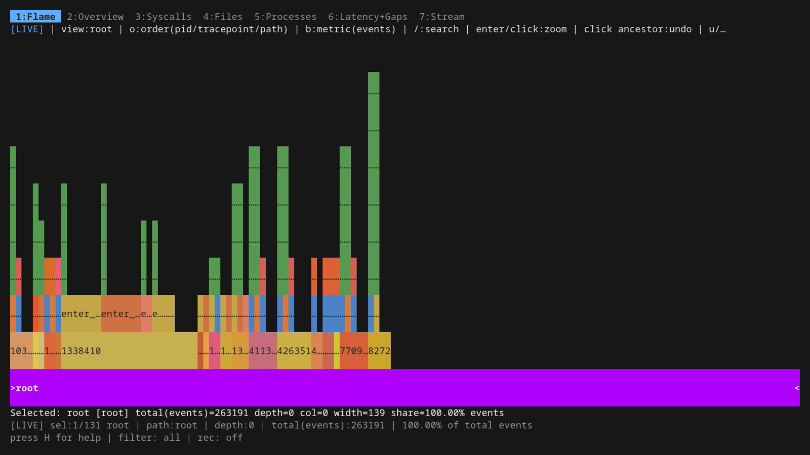
comm/path/tracepoint — processes at the bottom, file paths in the middle, syscalls on top. Inverse of the default in the upper two layers: you see processes, then which files they hit, then which syscalls hit each file. Best when you care about "what files does this program touch?" more than "what syscalls does it issue?".
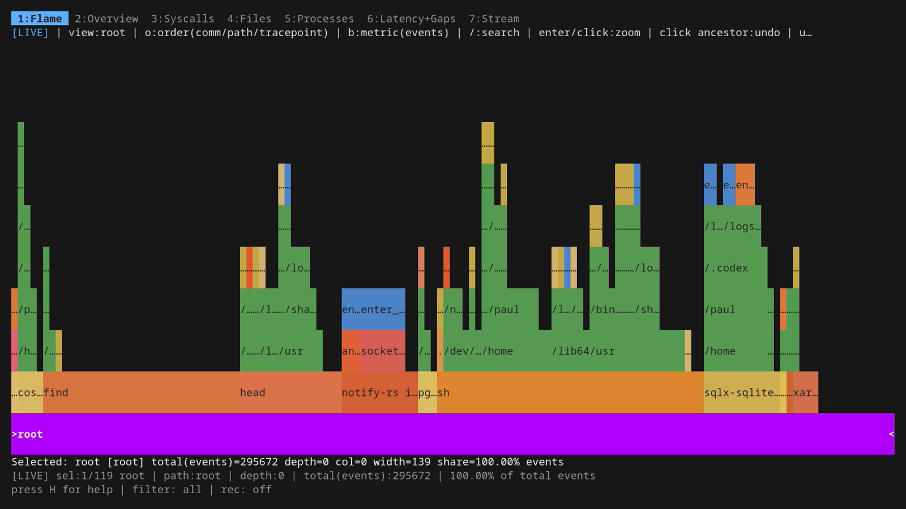
In every ordering the rule is the same: scan the bottom row to pick a "by what?" dimension, then walk up to drill in. Bar widths always mean the same thing: proportion of the active metric (events or bytes, toggled with b). The toolbar at the top of the chart always shows the current ordering as o:order(<dim1>/<dim2>/<dim3>), so you never lose track of which lens you're looking through.
If you want to skip the rotate-with-o dance and pick a custom three-tuple from the start, the headless side has you covered: -fields comm,tracepoint,path (or any other valid combination of comm, pid, tid, tracepoint, path) sets the collapse fields up front, and -count count|bytes picks the metric. Both are inherited by the live TUI flamegraph if you go that way, and they're what mage demo uses when it wants a specific ordering on a specific tape. Useful for scripted captures where you already know the lens you want.
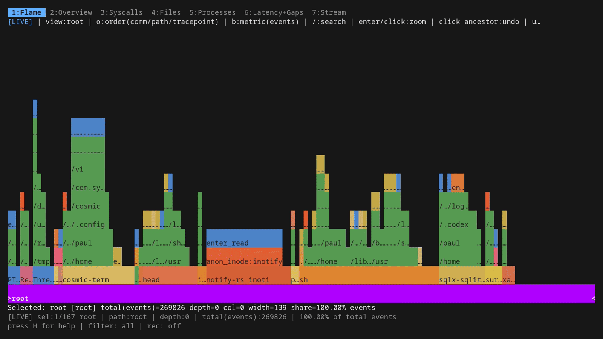
The seven tabs, in 30 seconds each
The number keys jump between tabs. tab and shift+tab step.
2 Overview
A sparkline plus the top syscalls and top paths — the at-a-glance view, useful as a "what's happening right now?" landing tab when you don't yet know what you're looking for.
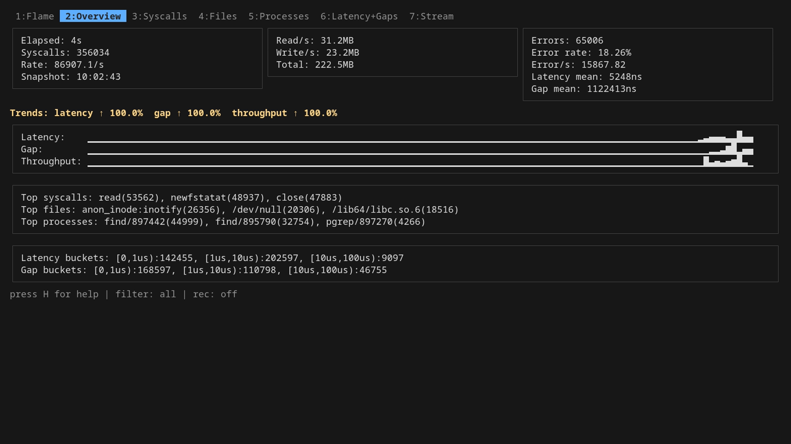
3 Syscalls
A sortable table of every syscall ior knows about, with rate, average latency, p95/p99, total bytes, and error count. s sorts by the selected column, S reverses. The most useful column when something's wrong is usually p99 — it's where you see the long-tail outlier syscall types.
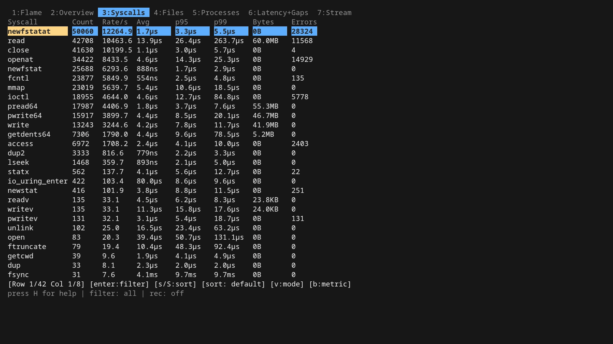
4 Files
Same shape as Syscalls but rows are file paths. The interesting key here is d: it rolls per-file rows up into their parent directory. Essential when you've got a process touching ten thousand files in /usr/share/ — without it the table is unreadable noise.
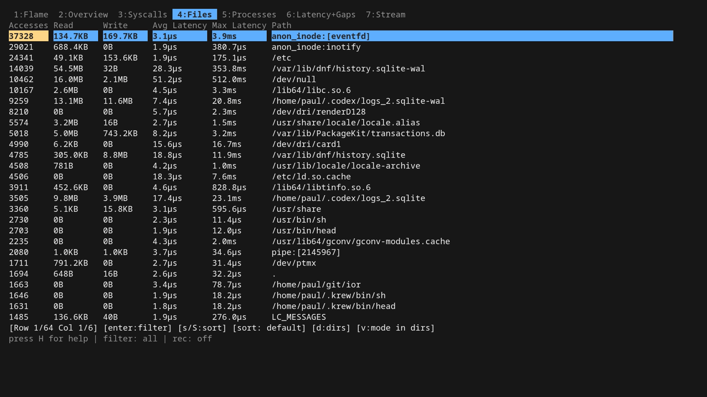
5 Processes
Same shape again, but rows are processes / comms. Best paired with the Stream tab — once you spot a culprit comm here, push it to the global filter with Enter and the rest of the dashboard is scoped to that process.
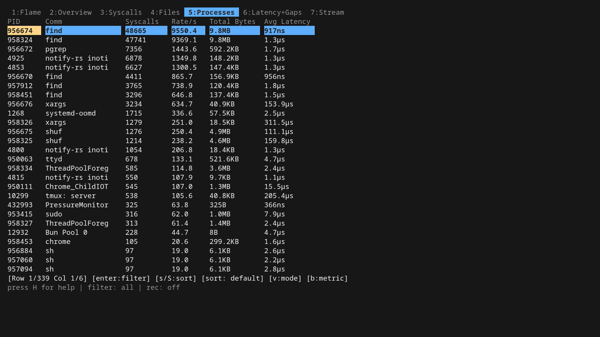
6 Latency + Gaps
Two histograms side by side: how long each syscall took (latency), and the wall-clock interval between syscalls on the same thread (gap). Latency tells you "is the kernel slow"; gap tells you "what is the program doing between two kernel calls".
One important point about that gap: ior measures it from the exit of one syscall to the entry of the next on the same TID, but it doesn't know what the thread was doing in the meantime. A long gap doesn't mean the thread was idle. It might have been pinned on a CPU running pure userspace code (number-crunching, JSON parsing, GC, a busy loop). All "gap" tells you for sure is "this thread didn't call into the kernel for X microseconds." Whether that's because it was sleeping, blocked on a condition variable, computing, or scheduled out is something the gap value alone cannot answer. Pair it with top/perf top if you need to disambiguate. Still useful in practice: a syscall-driven workload with surprisingly long gaps is a strong hint that you're CPU-bound somewhere outside the kernel, and that's a different optimisation conversation than slow I/O.
The dd loop in the demo workload spreads the latency distribution out so you can actually see the shape.
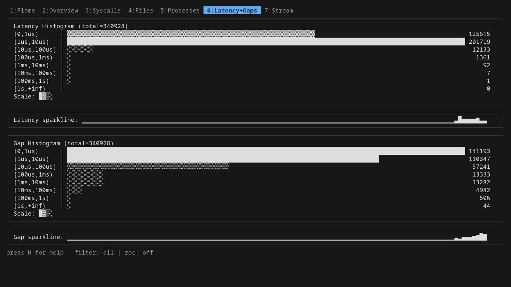
7 Stream
The live tail — every event as it happens, in a row-per-event ring buffer. This is where you spend most of your time when something's actually broken. The whole next section is about it.
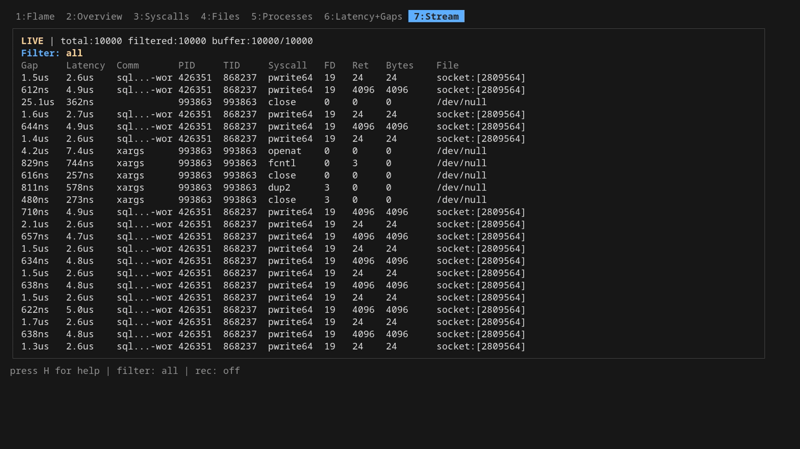
The Stream tab is the good one
space pauses. In pause mode, the same vi-style h/j/k/l (or arrow keys) move the row/column cursor across the table. Hitting Enter on a cell pushes a new filter onto a stack, narrowing what you see. Pile them up — comm, then syscall, then file — and ESC pops them off LIFO when you want to back out.
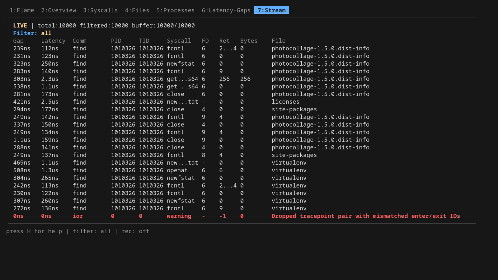
/ and ? are regex search forward/backward. n and N walk matches. The search runs against every column in the ring buffer and wraps at the end. Search and filtering are different beasts: search highlights and jumps, filtering hides everything that doesn't match.
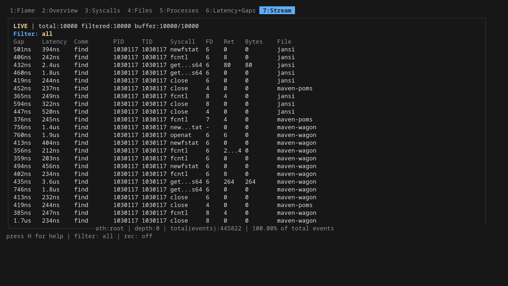
e exports the current filtered snapshot to a CSV in the working directory. x does the same for the paused stream view specifically (preserving your filter stack), X prompts for a filename, E opens the most recent export in $EDITOR.
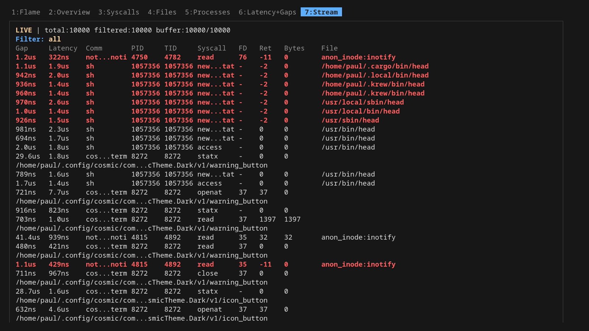
Filtering, more thoroughly
The Enter-to-push trick isn't unique to Stream. It works the same on Files, Syscalls, and Processes: highlight a row, hit Enter, and the cell value becomes a filter against the entire dashboard. Three tabs of "I see one weird path / comm / syscall, drill in" with one keystroke.
The filter status line gives you a one-glance summary of every active frame, written like:
- comm~bash: substring match on a string column. This is what Enter-on-a-cell produces for comm, syscall, and file.
- pid=1234: exact equality. Used for pid, tid, fd, ret, bytes.
- latency>=5ms / gap>=10us: numeric comparison with a duration suffix. The full operator set is >, <, =, >=, <=, !=.
Stack frames AND together, so pushing comm~bash and then syscall~openat shows you bash's openat calls, not bash OR openat.
Undoing is symmetric to pushing: ESC pops the most recent frame off the stack, one keystroke per layer, LIFO. Press it once to drop the syscall~openat filter and you're back to bash-only; press it again and the comm~bash filter goes too, leaving the unfiltered view. To clear the whole stack at once, just hold ESC until the status line reads filter: all. The F key is a synonym for ESC here and works from any tab, handy from Files/Syscalls/Processes where ESC might otherwise close a modal first.
Two other knobs do related work:
- p, t, o open the PID, TID, and probe-toggle dialogs. These are global filters: they reconfigure the BPF side, so kernel-level events for excluded PIDs/probes never even reach userspace. Cheaper than filtering a firehose, but it also means the filter applies to recordings (the parquet file only contains rows the kernel let through).
- The CLI mirrors of those dialogs let you bake the same scoping into a one-shot run: -pid, -tid, -comm, -path, plus -tps <regex> / -tpsExclude <regex> for picking which tracepoints to attach in the first place.
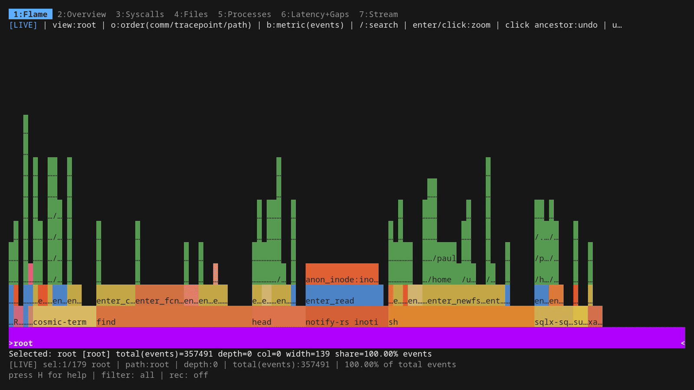
Recording
Three persistence flows, each for a different job:
- R from the dashboard starts streaming Parquet. Every event row that survives your current TUI filter goes to disk continuously. R again stops. Footer shows the active file or the last error. If you don't want CSV snapshot exports at all (the e / x keys), launch with -tuiExport=false and those keys go away.
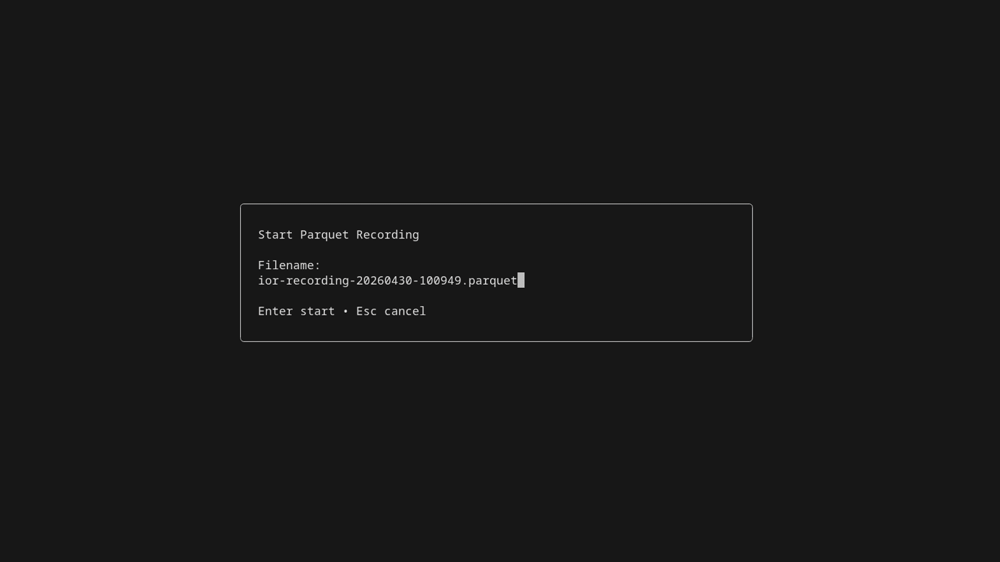
- sudo ./ior -flamegraph -name <n> writes one aggregated .ior.zst artifact at shutdown. Aggregated counters, not per-event rows. Cheaper to write, ideal for ior's native flamegraph workflow and the integration test harness (which I'll come back to in Part 3).
- sudo ./ior -parquet trace.parquet is the headless firehose: every row, no TUI, no filtering. sudo ./ior -plain is even lighter, CSV to stdout, pipe it into anything.
Once a parquet file is on disk, point any SQL-over-parquet tool at it — Part 3 walks through ClickHouse Local, with real query output against a 30-second capture.
What's new in v1.1.0
A handful of TUI additions landed in v1.1.0 after this post was originally written against 1.0.0. Nothing in the tour above became wrong, but a few keystrokes do more than they used to:
- Three-way metric cycle on the flamegraph. b now toggles count → bytes → duration; the new "duration" mode weights bars by total syscall latency, which answers "where is the wall-clock time going?" in one keystroke. The same metric is wired through the bubble, treemap, and icicle views.
- Auto-reset timer for the live aggregates. -resetTimer=<dur> (default 30s, 0 disables) sets the cadence at launch; the I hotkey cycles off → 10s → 30s → 60s → 2m → 5m → off while ior is running, and the dashboard chrome shows the remaining countdown. Same effect as hitting r on a schedule — keeps the live trie and stats engine bounded on long traces without you remembering to do it.
- In-place global filter swap. Pushing or popping the global filter (the Enter-on-a-cell trick, the PID/TID/probe pickers, ESC to pop) no longer detaches and reattaches every BPF tracepoint, so the "Attaching tracepoints..." overlay that used to flash for several seconds on busy I/O boxes is gone. Filter changes are now instant.
- Flame graph TUI keeps up under heavy load. Per-tick snapshot refresh runs on a background goroutine, navigation walks a precomputed ancestry index, and View() output is memoized. Keystrokes (pause, zoom, navigate, search) land within one frame even when the live trie is ingesting thousands of events per tick.
- -tui-fast-refresh=<dur> (default 250ms, 0 disables) makes the flamegraph and stream tabs' high-frequency refresh cadence configurable, in case you want a lighter feel on a slow terminal or a punchier one on a busy workload.
What's still missing
- No record/replay. That was the whole point of the original I/O Riot. The new one is a tracer, not a workload simulator. I keep going back and forth on whether to put replay back in.
- No userspace symbol resolution. Stacks are at the syscall surface, not "which line of which library called read".
But the live flamegraph, the stackable stream filters, and the cheap parquet capture together cover the cases I actually hit week to week. The demo above is the easiest way to get a feel for whether it's the kind of tool you want.
For installing it and the eBPF / CO-RE / static-linking story (why one build runs on every other Linux box you scp it to), see Part 2. For the per-event schema, async-syscall caveats, the probe-generator safeguard against missing new kernel syscalls, and post-mortem SQL on the parquet output, see Part 3.
Source on Codeberg
The full in-repo tutorial
Read the next post of the series:
Unveiling I/O Riot NG — Part 2: install and compile once, run everywhere
E-Mail your comments to paul@nospam.buetow.org :-)
Other related posts are:
2026-05-17 Unveiling I/O Riot NG — Part 3: under the hood
2026-05-11 Unveiling I/O Riot NG — Part 2: install and compile once, run everywhere
2026-05-08 Unveiling I/O Riot NG v1.0.0 — Part 1: a guided tour (You are currently reading this)
2018-06-01 Realistic load testing with I/O Riot for Linux
Back to the main site